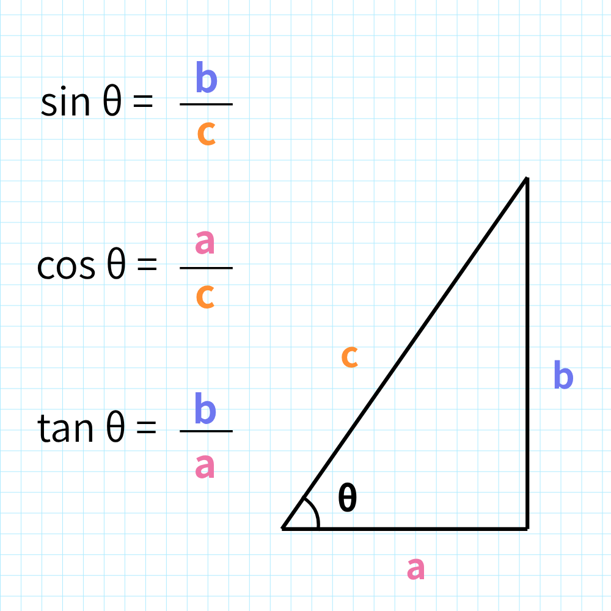
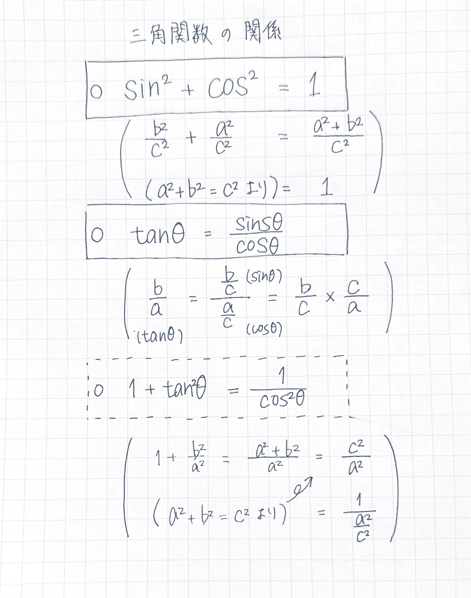

グラフの書き方

- ①x軸（→）とy軸（↑）、原点oを書く。
- ②頂点、極値、式からわかる特徴のある点を調べる。
- ③点と点を通る線を書く。
三角関数の復習


三角関数の公式一覧
基本的な定義
sinθ = 対辺斜辺
cosθ = 隣辺斜辺
tanθ =
対辺隣辺
=
sinθcosθ
三角関数の相互関係
sin²θ + cos²θ = 1
1 + tan²θ = 1cos²θ
1 + cot²θ = 1sin²θ
加法定理
sin(α ± β) = sinα cosβ ± cosα sinβ
cos(α ± β) = cosα cosβ ∓ sinα sinβ
tan(α ± β) = tanα ± tanβ1 ∓ tanα tanβ
倍角・半角の公式
sin2θ = 2sinθ cosθ
cos2θ = cos²θ - sin²θ = 2cos²θ - 1 = 1 - 2sin²θ
tan2θ = 2tanθ1 - tan²θ
合成公式
a sinθ + b cosθ = √(a² + b²) sin(θ + α)
※ tanα = ba